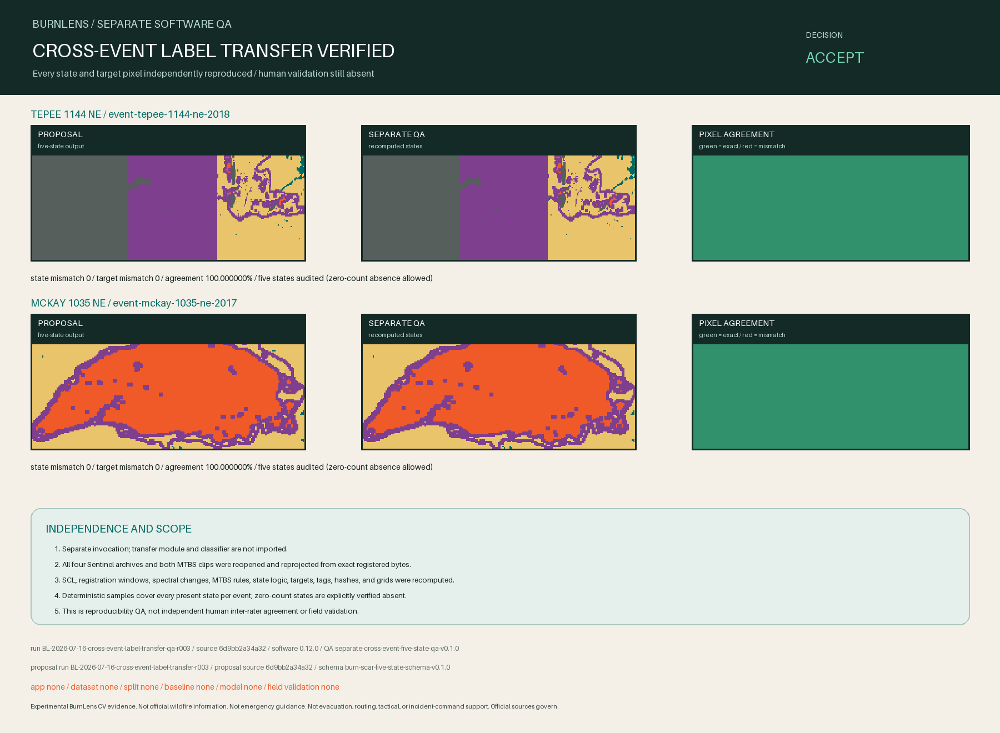

Experimental BurnLens CV evidence. Not official wildfire information. Not emergency guidance. Not evacuation, routing, tactical, or incident-command support. Official sources govern.

Decision
ACCEPT_CROSS_EVENT_LABEL_TRANSFER_PROPOSAL
The separately invoked implementation reopened all six exact registered source assets, reproduced every proposal state and target pixel across Tepee and McKay, and completed deterministic per-state audits. Accept this exact proposal as reviewable evidence only; no dataset, model, accuracy, field-validation, operational, or official claim follows.
0 state mismatches; 0 target mismatches; 45 deterministic audit samples.
TEPEE 1144 NE
| State | Proposal | QA | Matching | Samples | Absent verified |
|---|---|---|---|---|---|
| background-candidate | 494 | 494 | 494 | 5 | n/a |
| burned | 92 | 92 | 92 | 5 | n/a |
| unknown | 10,942 | 10,942 | 10,942 | 5 | n/a |
| excluded | 16,025 | 16,025 | 16,025 | 5 | n/a |
| review-needed | 16,322 | 16,322 | 16,322 | 5 | n/a |
MCKAY 1035 NE
| State | Proposal | QA | Matching | Samples | Absent verified |
|---|---|---|---|---|---|
| background-candidate | 55 | 55 | 55 | 5 | n/a |
| burned | 9,119 | 9,119 | 9,119 | 5 | n/a |
| unknown | 7,483 | 7,483 | 7,483 | 5 | n/a |
| excluded | 0 | 0 | 0 | 0 | yes |
| review-needed | 3,398 | 3,398 | 3,398 | 5 | n/a |
Independence
- Separately invoked: yes.
- Imports transfer module/classifier: no / no.
- Reopens exact sources and recomputes source logic: yes.
- Independent human inter-rater validation: no.
Traceability
QA run / source: BL-2026-07-16-cross-event-label-transfer-qa-r003 / 6d9bb2a34a32f775e4bf83249151e41c25998ee5
Proposal run / source: BL-2026-07-16-cross-event-label-transfer-r003 / 6d9bb2a34a32f775e4bf83249151e41c25998ee5
Software / QA protocol: 0.12.0 / separate-cross-event-five-state-qa-v0.1.0
Label protocol / schema / proposal: burn-scar-label-protocol-v0.1.0 / burn-scar-five-state-schema-v0.1.0 / deschutes-cross-event-label-proposal-v0.1.0
Application / dataset / baseline / model: none / none / none / none
Boundary
- Not proven: Independent human inter-rater agreement, field validity, universal calibration, dataset fitness, model performance, or operational readiness.